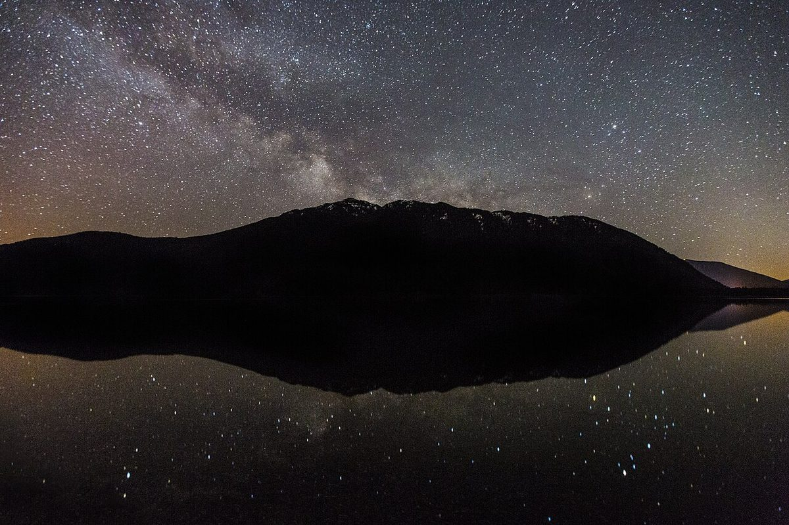
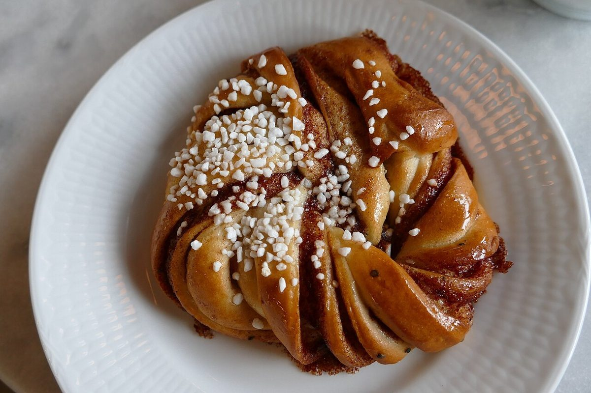
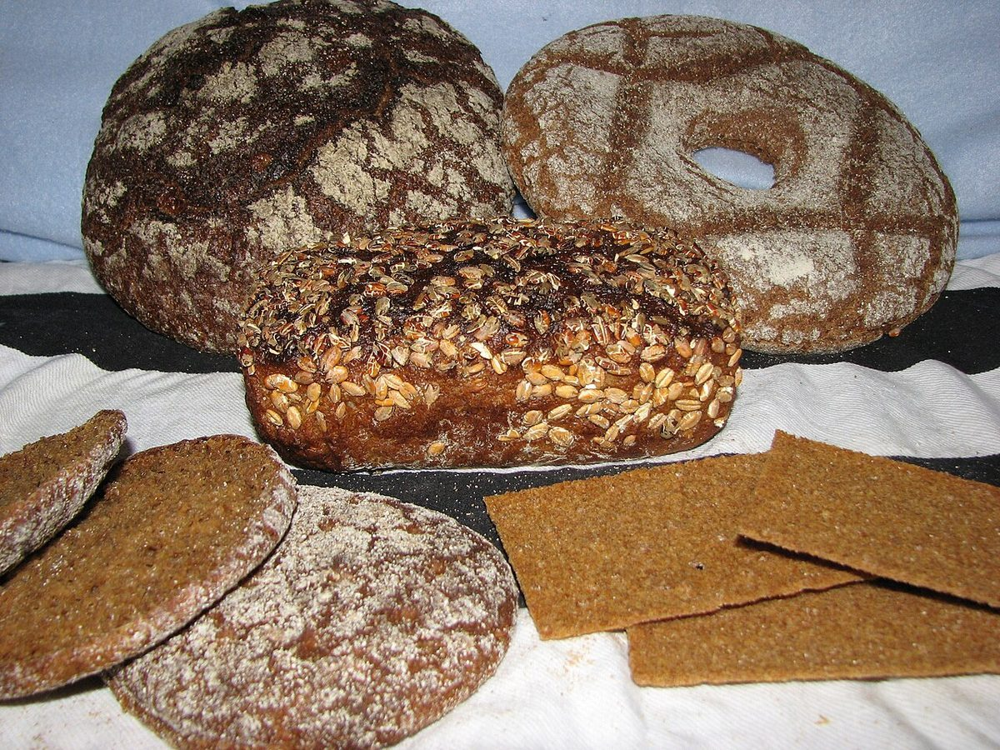
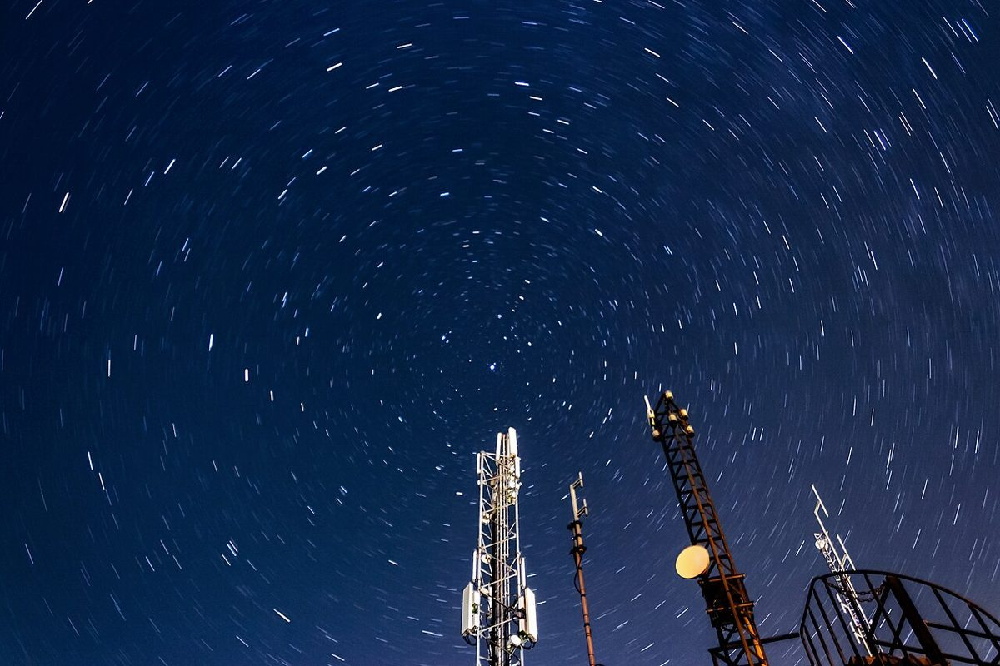

パン屋 / 千葉県流山市南流山
ナガレヤマベーカリー
千葉県流山市南流山のパン屋「ナガレヤマベーカリー」のご案内ページです。営業時間やメニューなど、詳しいことは準備中。お電話は 04-7197-4309、まずはInstagramもどうぞ。
野帳のまえがき
「ナガレ」から、流れ星を連想しました
屋号の「ナガレ」という音から、制作側は夜空を横切る流れ星を連想しました。そこでこのサイトは、流れ星を記録する観測野帳のつくりにしています。制作側の連想で、お店の理念・由来とは無関係です。
お店が流れ星や天体を意識しているかどうかは分かりません。カフェを併設しているかも未確認です。
観測記録(見立て五種)
パンの形を、星に見立てて。
下の写真と説明は、パンの形を夜空に見立てた制作側の遊びです。写真は国外・撮影地不明のフリー素材で、お店で提供しているパンではありません。
- No.01
満月型

イメージ写真(撮影地不明) 丸い形のパンを、満月に見立てました。
- No.02
尾を引く型
細長く切り分けた形を、流れ星の尾に見立てました。
- No.03
渦巻き型

イメージ写真(国外) 渦を描く形を、渦巻き銀河に見立てました。
- No.04
新月型

イメージ写真(国外) 黒っぽい生地を、月のない夜に見立てました。
- No.05
星団型

イメージ写真(撮影地不明) 重なり合う形を、星のあつまりに見立てました。
観測地点の記録(確認できたものだけ)
お店のこと
| 所在地 | 〒270-0163 千葉県流山市南流山1丁目6-8 |
|---|---|
| 電話 | 04-7197-4309 |
| 営業時間 | 準備中 |
| 定休日 | 準備中 |
| ご予約 | 準備中 |
| 駐車場 | 準備中 |
| SNS | Instagram @nagareyamabakery |

星の軌跡のイメージ。実際のお店とは関係がありません。